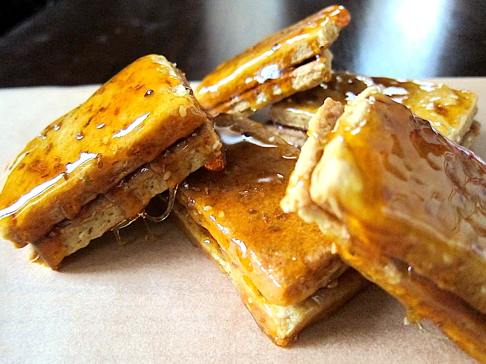
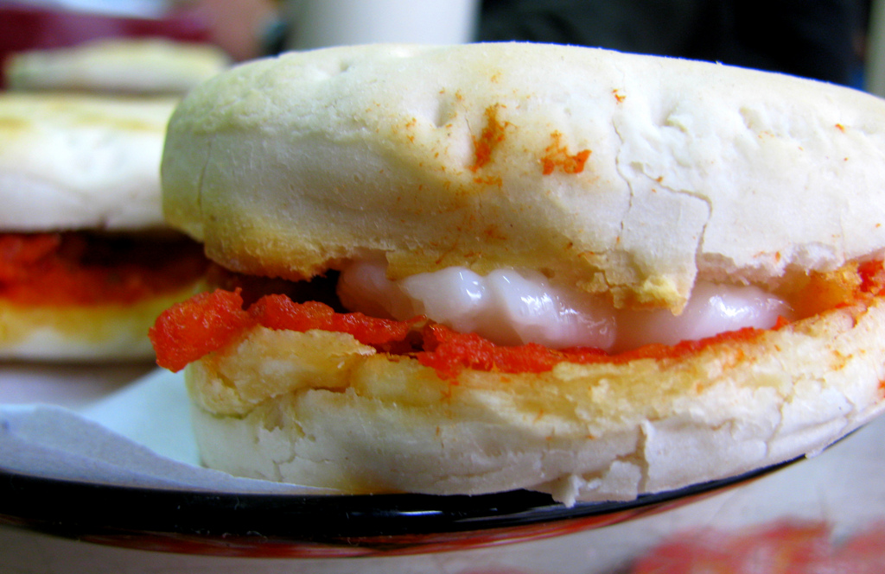

Comidas que solo encontraras en Chile...
1. Chumbeque
Este dulce típico de la zona norte de Chile, es elaborado a base de manteca, harina y capas de mieles de frutas, como el limón o el mango. Una delicia para los golosos.
2. Choriqueso
El pan con relleno de pasta de chorizo y queso derretido, es típico de Punta Arenas. Además, lo tradicional es comerlo con un vaso de leche con plátano, ¿te atreverias a probarlo?
